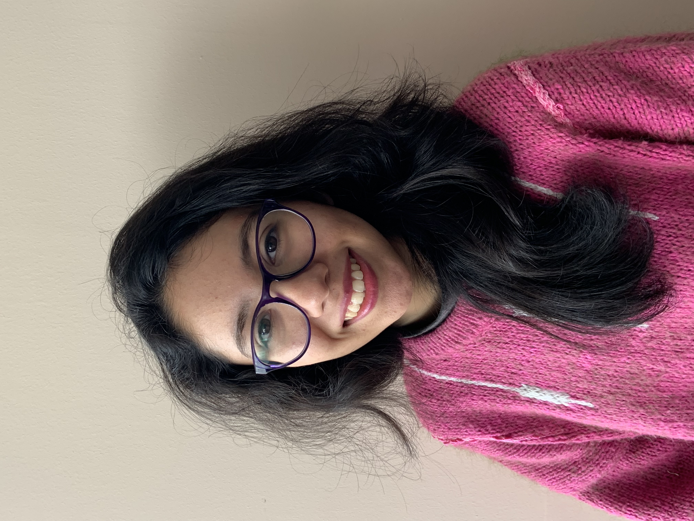

Mariajosé Paz Escobar Aguilar | WDD 130
Hi, I am Mariajosé Escobar, I'm from Chile and in my family we are four, my mother and sister are graphic designers and my father studied business administration, with me being the youngest and currently studying with BYU-Pathway. My family on my mother's side is small, she only has one brother, but my family on my father's side is very large, he has nine sisters and is the only boy in his family, and I have a cousin serving a mission. Among my hobbies is reading, I love reading, I love visiting bookstores and buying different editions, I love video games and cooking as a family. I also like hiking in the mountains, I also like video games, I love animals and playing with my cat, and spending time with my family and going out together to meet new places. I have had the blessing of living in Argentina, and in Uruguay, I currently serve as a seminary teacher, I love teaching, studying the scriptures, and having the blessing of listening to the Church leaders in the General Conference.